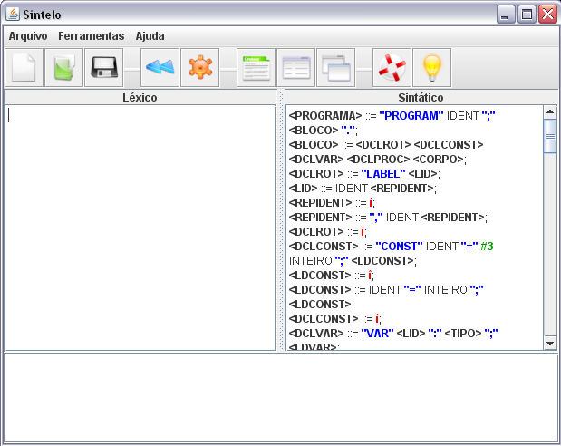
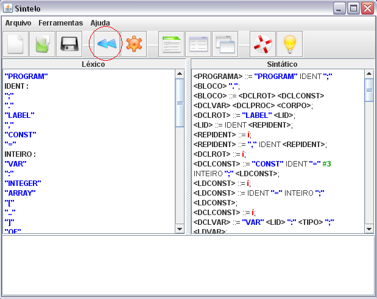
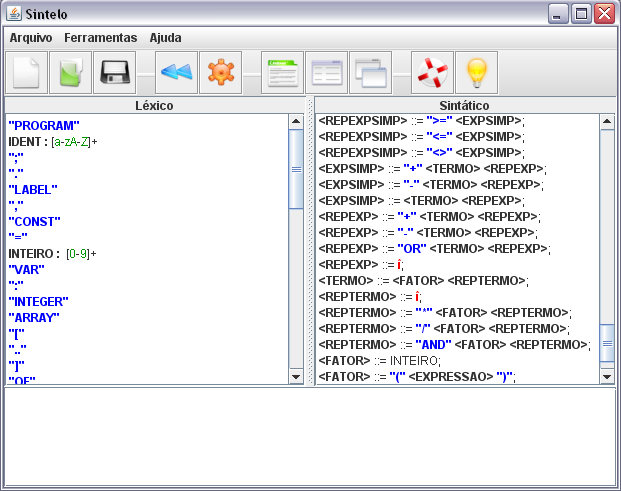

Voltar Índice
Voltar Índice
EXTRAIR TOKENS
O Sintelo traz como facilidade para o usuário a extração de tokens, neste o usuário necessita somente especificar a gramática.

Depois selecionará o ícone correspondente ou irá em “Ferramentas” e “Extrair tokens”.

O software a partir da gramática declarada extrairá os tokens correspondentes, o usuário terá somente que fazer os devidos ajustes.
